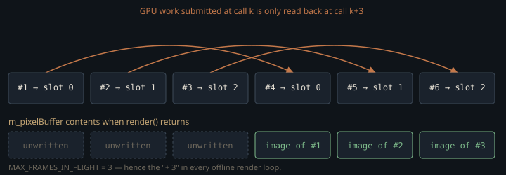

Monograph · Tree · ← Module hub · VulkanRenderer facade
gpu
VulkanRenderer facade
Public API: modes, setScene, ensureRT, denoise, pixels, present.
A renderer that never owns a window
`VulkanRenderer` creates its own instance, picks its own physical device, and creates a logical device, command pool and offscreen framebuffer — and never creates a swapchain. Its delivery surface is a `std::vector<uint8_t>` of RGBA8 pixels. That is not a limitation the interactive viewer escapes — the GLFW viewer renders headless too, then blits the CPU buffer into an OpenGL texture every frame.
const uint8_t* pixels = renderer.getPixels();examples/interactive.cpp:330So the PNG writers, the golden smoke test, the inverse-rendering fitter and the realtime viewer all drive the identical `render()` → `getPixels()` pair. `gpu_module.hpp` is not a second entry point: it is a seven-include umbrella whose own comment tells you to prefer the specific headers.
* Umbrella for the GPU / Vulkan subsystem (prefer specific headers in production).ohao/gpu/gpu_module.hpp:4Four modes, three of which can be refused
`RenderMode` splits into two raster modes (Forward, Deferred) and two ray-traced ones (RTRealtime, RTOffline). The RT branch of `render()` is guarded by three separate conditions — a pipeline descriptor for the mode, a live renderer profile, and an acceleration-structure manager — and falls through to raster if any is missing.
if (const auto* rtPipeline = getRTPipeline(m_renderMode);ohao/gpu/vulkan/renderer.cpp:380`setRenderMode` returns `void` and is allowed to refuse: if deferred initialisation failed — which `initialize()` treats as non-fatal — or if the device has no RT extensions, it logs and leaves the previous mode in place. Only Forward is unconditionally available.
std::cerr << "Deferred rendering not available, staying in Forward mode" << std::endl;ohao/gpu/vulkan/renderer.cpp:447std::cerr << "Path tracing not available, staying in current mode" << std::endl;ohao/gpu/vulkan/renderer.cpp:453The mode you asked for is therefore not necessarily the mode you got, and the field starts at Forward, not Deferred.
RenderMode m_renderMode{RenderMode::Forward};ohao/gpu/vulkan/renderer.hpp:526Anything that reports "rendering in mode X" from its own local variable rather than from `getRenderMode()` can print a lie.
Two RT abstractions that are not duplicates
The facade holds *both* `IRTRenderPipeline` objects and `IRTRendererProfile` objects for each RT mode, which reads like redundancy until you look at their storage class. The pipelines are plain value members with no GPU state — pure constant policy, always answerable — so `getRTPipeline(mode)` can report "this is an RT mode, and here are its default settings" before a single Vulkan object exists. The profiles are `unique_ptr`s, each owning a whole `PathTracer`, and they are the thing that might be null.
The two profiles are not the same tracer with different knobs; they load different raygen SPIR-V. `RTProfileRendererBase::init` installs the profile's shader set before `PathTracer::init` runs, so the shader set the `PathTracerShaderSet` struct declares as its own default is never the one that reaches the pipeline through this facade.
m_pathTracer.setShaderSet(m_shaderSet);ohao/render/rt/rt_profile_renderer.hpp:99const char* raygenSpv{"bin/shaders/rt_pt_raygen.rgen.spv"};ohao/render/rt/path_tracer.hpp:55Reading `rt_pt_raygen.rgen` and concluding "that is what RTOffline runs" is the mistake this indirection invites; `RTOfflineRenderer` names `rt_pt_raygen_offline.rgen.spv` explicitly.
"bin/shaders/rt_pt_raygen_offline.rgen.spv",ohao/render/rt/rt_profile_renderer.hpp:220Why the path tracer is not built during initialize()
`initialize()` builds the device, the deferred renderer and the acceleration-structure manager, but no `PathTracer`. Each profile owns one, and a `PathTracer` declares nineteen scalar `VkImage` members: beauty and accumulation; the albedo and normal guide pair; nine denoiser guide AOVs (motion, depth, roughness, diffuse and specular radiance, diffuse albedo, specular colour, packed normal-roughness, specular hit distance); NRD's denoised diffuse and specular and its composed HDR; the cinematic chain's pre-DoF and final tonemapped LDR; and the DLSS-RR HDR colour output — plus four image *arrays*: three bloom mips, ping-pong surface and shading history, and a 3×2 GI reservoir set. Only the DLSS output is `#ifdef`-guarded; the other eighteen are unconditional. {{cite ohao/render/rt/path_tracer.hpp "VkImage m_dlssColorOutImage"}} Constructing both profiles eagerly doubles all of it. The rejected alternative is stated in the code: eager dual init can exhaust device memory at 4K. {{cite ohao/gpu/vulkan/renderer.cpp "// Lazy-create realtime/offline PathTracers on setRenderMode(). Eager dual"}} The cost of laziness is a re-upload. Scenes are normally uploaded by `setScene()` long before any profile exists, and the upload paths fan out through `forEachRTRenderer`, which was a no-op at the time. So `ensureRTRenderer` marks the acceleration structure dirty and re-runs the whole scene upload when it creates a profile. {{cite ohao/gpu/vulkan/renderer.cpp "if (created && m_scene && m_initialized) {"}}
`ensureRTRenderer` is public but has no caller outside the class: `setRenderMode` is its only invocation in the tree. The header documents what it does and why it is lazy, and says nothing about who else is meant to call it.
// Lazy-create the PathTracer for `mode` (avoids dual full-res OOM at 4K).ohao/gpu/vulkan/renderer.hpp:142The settings that are thrown away every frame
Every RT frame begins by discarding the current settings and reloading the active pipeline's compile-time defaults.
m_rtSettings = pipeline.getDefaultSettings();ohao/gpu/vulkan/renderer.cpp:525That keeps the pipeline authoritative over tracer behaviour, but it means every user-settable field has to be rescued by hand across the reset. Three are stashed in locals and written back immediately: anisotropy strength, anisotropy rotation, subsurface strength.
float preservedAnisoStrength = m_rtSettings.anisotropyStrength;ohao/gpu/vulkan/renderer.cpp:522A fourth, the realtime per-frame sample count driven by the viewer's `+`/`-` keys, is re-injected one level down in `applyRTRenderSettings` instead.
// Re-inject the interactive per-frame sample count: prepareRTSceneForFrameohao/gpu/vulkan/renderer.cpp:494`RTRenderSettings` is not a settings object in the usual sense — it is a per-frame scratch struct with a hand-maintained rescue list. Adding a field and a setter is not enough to make it stick; the field must also be named in `prepareRTSceneForFrame` or `applyRTRenderSettings`, or it silently reverts to the profile default on the very next frame.
Who wins the argument about the denoiser
`setDenoiseMode` latches a `m_denoiseModeOverridden` bit that does two things. It stops the per-frame settings sync from overwriting the user's choice with the profile default, and it gates a narrow injection back into the tracer's own settings — scoped to Atrous and DLSS-RR, and not to NRD or OIDN.
if (m_denoiseModeOverridden &&ohao/gpu/vulkan/renderer.cpp:488The comment above that condition explains the scoping as GPU-side dispatch versus everything else. That is not the real distinction — NRD is dispatched GPU-side from inside the same `PathTracer` frame. Its block is gated on `enableAuxiliaryAOVs`, a profile flag, not on `denoiseMode`, so REBLUR runs on every RT frame of a profile that produces AOVs and nothing needs injecting for it to fire.
if (m_nrdDenoiser && m_renderSettings.enableAuxiliaryAOVs) {ohao/render/rt/path_tracer_render.cpp:869The Atrous and DLSS-RR blocks branch on `m_renderSettings.denoiseMode` directly, and the per-frame reload sets that field to `None` (realtime) or `OIDN` (offline) — never Atrous, never DLSS-RR. Without the injection those two branches are unreachable from the command line. OIDN needs nothing either: it never enters the tracer at all.
if (m_renderSettings.denoiseMode == DenoiseMode::Atrous && m_atrousDenoiser) {ohao/render/rt/path_tracer_render.cpp:743Widening that condition to "always inject" would look like a cleanup and would clobber each profile's default. Those defaults matter: with no `--denoise` flag at all, RTOffline denoises with OIDN because its settings constant says so, while RTRealtime starts at None.
.denoiseMode = DenoiseMode::OIDN,ohao/render/rt/rt_settings.hpp:60The pixel buffer is three frames behind
The pipelined paths use a ring of three frame slots.
constexpr uint32_t MAX_FRAMES_IN_FLIGHT = 3;ohao/render/frame/frame_resources.hpp:19Each `render()` waits on its slot's fence, copies that slot's staging buffer into `m_pixelBuffer`, and only *then* records and submits this frame's work into the same slot. The copy therefore delivers the image submitted three calls ago, not the one just issued.
// Read back previous frame's pixelsohao/gpu/vulkan/render_dispatch.cpp:138
Offline loops in this repo render `spp + 3` frames rather than `spp` — cornell_box, model_viewer, turntable and the inverse-rendering session driver; env_demo drops to `samples + 2` only when `--pan-x` makes it add one final frame after moving the camera.
const int frames = cli.useDeferred ? 10 : (samples + 3);examples/cornell_box.cpp:164const int frames = budget.spp + 3;ohao/inverse/render_session.hpp@223ff7f:58Under `--denoise=none` that arithmetic lands exactly: after `spp + 3` calls the last copy delivered call `spp - 1`, the frame that had accumulated `spp` samples. No comment at any of those sites ties the `+ 3` to the ring depth, though, and it cannot be the whole story — the default offline configuration is `DenoiseMode::OIDN`, whose `getPixels()` branch never reads `m_pixelBuffer`. There the three extra frames buy three extra samples and compensate no lag.
The one path without the lag is the legacy forward fallback used when frame resources fail to initialise: it blocks on a fence and maps the staging memory in the same call.
getPixels() is four branches wearing one signature
The accessor branches on denoise mode into genuinely different work, and only two of the four branches touch the GPU at all.
None, Atrous and DLSS-RR return the lagged buffer directly, for one shared reason: whatever denoising ran, ran GPU-side into `m_outputImage`, the RGBA8 beauty the ring already stages. Atrous filters that image in place. DLSS-RR runs `NGX_VULKAN_EVALUATE_DLSSD_EXT` into an RGBA16F colour target and then tonemaps that target into the same beauty image, so the standard readback picks it up unchanged.
if (m_denoiseMode == DenoiseMode::None || m_denoiseMode == DenoiseMode::Atrous ||ohao/gpu/vulkan/renderer.cpp:706m_dlssRR->tonemap(cmd, m_dlssColorOutView, m_outputView, m_width, m_height);ohao/render/rt/path_tracer_render.cpp:854The comment on that branch still says DLSS-RR does not dispatch denoising; it dates from the Phase 1 foundation commit and was not updated when the evaluate-and-tonemap path landed. The branch is right, its stated reason is not. What *is* true is that the tonemap runs only when NGX feature creation succeeded — where that fails, the same branch returns raw beauty.
The second branch is a cache hit: `render()` clears `m_denoiseCacheValid`, so repeat calls between two renders return the stored buffer without submitting anything.
Only the last two do work. NRD reads back its own tonemapped RGBA8 image. OIDN takes a different route again: it waits for the device to go idle and copies the *live* RGBA32F accumulation image plus the albedo and normal AOVs, so it sees the current frame rather than the three-frames-old one, filters them on the host and caches the result until the next `render()`. The filter is created on `oidn::DeviceType::Default` — OIDN picks the device, and nothing here pins it to the CPU — but the round trip through host memory and `vkDeviceWaitIdle` is unconditional.
bool ok = readbackImage(rtRenderer->getAccumImage(), beauty);ohao/gpu/vulkan/render_dispatch.cpp:622oidn::DeviceRef device = oidn::newDevice(oidn::DeviceType::Default);ohao/render/rt/denoise/oidn_denoise.cpp:29Reading the live image means the OIDN path needs no warm-up, and the in-tree smoke test depends on that: it sets RTOffline, whose profile default latches `DenoiseMode::OIDN`, calls `render()` exactly once, and writes a PNG straight from `getPixels()`.
renderer.setRenderMode(RenderMode::RTOffline);tests/renderer/renderer_test.cpp:59Two consequences follow. First, the method is declared `const` but casts away constness to allocate a command buffer, submit it and wait — it is safe only because every consumer is a single-threaded loop that calls it after `render()` returns. Second, the RGBA8 and HDR paths do not observe the same frame, so a golden test that compares `--denoise=none` against `--denoise=oidn` output is comparing different points on the accumulation curve unless the loop has already converged.
Below that sits the bulk of the translation unit — more than half of `renderer.cpp`: eleven near-identical readback helpers, seven pulling debug AOVs and four pulling NRD outputs, each open-coding a staging buffer, a one-shot command buffer, a pair of layout transitions and a `vkQueueWaitIdle`. Ten are instrumentation, reachable only from env_demo's dump flags and interactive's motion-vector key. The eleventh is not: `readbackNrdTonemapped` is how `--denoise=nrd` gets its picture at all, and because `render()` invalidates the cache every frame, that full queue stall runs once per displayed frame.
if (!self->readbackNrdTonemapped(rgba, rw, rh)) {ohao/gpu/vulkan/renderer.cpp:720Contracts
- On the `m_pixelBuffer` paths — None, Atrous, DLSS-RR — `render()` must be called at least `MAX_FRAMES_IN_FLIGHT` times before `getPixels()` returns real content; a single render then read yields an unwritten buffer. The NRD and OIDN branches never touch `m_pixelBuffer` and are correct after one call.
- `setRenderMode` may silently keep the previous mode. Read back `getRenderMode()` rather than trusting the argument.
- `resize()` destroys and recreates every RT image, so descriptors bound before the resize are stale — the inverse-rendering session forces a full scene rebind after resizing for exactly this reason.
- Any new `RTRenderSettings` field a caller can set must be added to the preserve list in `prepareRTSceneForFrame` or re-injected in `applyRTRenderSettings`, or the per-frame reload will discard it.
- `getPixels()` is not reentrant with GPU work in flight: on the NRD and OIDN branches it allocates a command buffer, submits and waits on the graphics queue. It skips that whenever `m_denoiseCacheValid` still holds, so only the first call after each `render()` costs the stall.
- `getDevice()` / `getPhysicalDevice()` currently have no callers in the tree; the header describes them as wiring for sibling differentiable-rendering pipelines.
[[nodiscard]] VkDevice getDevice() const noexcept { return m_device; }ohao/gpu/vulkan/renderer.hpp:136Source files
examples/interactive.cppohao/gpu/gpu_module.hppohao/gpu/vulkan/renderer.cppohao/gpu/vulkan/renderer.hppohao/render/rt/rt_profile_renderer.hppohao/render/rt/path_tracer.hppohao/render/rt/path_tracer_render.cppohao/render/rt/rt_settings.hppohao/render/frame/frame_resources.hppohao/gpu/vulkan/render_dispatch.cppexamples/cornell_box.cppohao/inverse/render_session.hpp@223ff7fpath noteohao/render/rt/denoise/oidn_denoise.cpptests/renderer/renderer_test.cppohao/gpu/vulkan/renderer_impl.hppParent hub for the full pipeline narrative; this page is the file-level design unit. Sitemap · hover glossary terms anywhere.